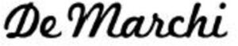

Trade Mark Journal No.2025/047 21 November 2025
WO0000001810497 (25,35)
Office of origin: Switzerland
Date of International Registration:25 June 2024
Date of designation in the UK:
25 June 2024

The mark consists of the verbal element DE MARCHI, in fancy typeface.
International priority date claimed: 24 June 2024
(Switzerland)
- Class 25
- Cycling jerseys; Jerseys (clothing); jerseys for sports; sleeveless jerseys; short-sleeved sports shirts; tee-shirts; sports singlets; tank tops; sports vests; sleeveless down vests; wind vests; cycling jackets; sports jackets; wind-resistant jackets; waterproof jackets; down jackets; sleeveless down jackets; sleeveless jackets; jackets; cycling bib shorts; bib shorts; bib tights; cycling shorts; sports shorts; shorts; Bermuda shorts; trousers; moisture-wicking sports pants; baselayer bottoms; cycling caps; skull caps; caps being headwear; woolly hats; baselayer tops; sweat-absorbent underwear; sports bras; undershirts; cycling gloves; neck gaiters; sweat-absorbent stockings; cycling socks; polo shirts; sweaters; sweatshirts; boxer shorts; boxer briefs; arm warmers (clothing); leg warmers; tracksuits; ear muffs (clothing); headbands (clothing); braces for clothing; hoods (clothing); visors being headgear; balaclavas; sports shoes; boots for sports; cycling shoes; overshoes; bomber jackets; anoraks (parkas); blazers; overcoats; coats; dusters (clothing); cardigans; shirts; denim pants; skirts; evening wear; long dresses; cuffs [clothing]; aprons (clothing); combinations (clothing); pockets for clothing; collars (clothing); ready-made clothing; rainwear; waterproof clothing; body warmers; knitwear (clothing); gaiters; pocket squares; rash guards; waistcoats; bathing suits; bathing trunks; bathing caps; bathrobes; underwear; knickers; underpants; slips (underclothing); pyjamas; dressing gowns; nightgowns; bibs, not of paper; romper suits; layettes [clothing]; socks; stockings; tights; shoes; slippers; sandals; boots; ski boots; snow boots; bags specially adapted for ski boots; soles for footwear; footwear uppers; inner soles; tips for footwear; heelpieces for footwear; heels; non-slipping devices for footwear; neckwear; scarves; bandanas (neckerchiefs); neckties; gloves (clothing); driving gloves; ski gloves; belts (clothing); muffs (clothing); fur stoles; shawls; sashes for wear; hats; cap peaks; berets; shower caps; sleep masks; visor caps; clothing, footwear, headwear.
- Class 35
- Retail or wholesale services, also on-line, for bicycles, parts and accessories thereof, electric bicycles, parts and accessories thereof, spare parts for bicycles, racing bicycles, assisted pedal bicycles, road racing bicycles, mountain bikes, touring bicycles; retail or wholesale services, also on-line, for spectacles, sunglasses, anti-glare glasses, goggles for sports, cases for eyeglasses and sunglasses, lenses for eyeglasses and sunglasses, frames for eyeglasses and sunglasses, chains for spectacles and sunglasses; retail or wholesale services, also on-line, for cords for spectacles and sunglasses, 3D spectacles, smart glasses, correcting lenses (optics), bicycle helmets, safety helmets, protective helmets, protective helmets for sports; retail or wholesale services, also on-line, for clothing for cyclists, footwear for cyclists, headwear for cyclists; retail or wholesale services, also online, for clothing, footwear, headwear; retail or wholesale services, also on-line, for bags, pouches for holding make-up, keys and other personal items, backpacks, canvas shopping bags; providing commercial information and advice for consumers in the choice of products and services; providing information and advice to consumers regarding the selection of products and items to be purchased; business information and inquiries; presentation of goods on communication media, for retail purposes; commercial information and advice for consumers [consumer advice shop]; sales promotion for others; outsourcing services (business assistance); procurement services for others (purchasing goods and services for other businesses); demonstration of goods; shop window dressing; sponsorship search; business inquiries; providing business information; administrative processing of purchase orders; organization and management of customer loyalty programs; administration of consumer loyalty programs; auctioneering; auctioneering provided on the internet; commercial administration of the licensing of the goods and services of others; provision of an online marketplace for buyers and sellers of goods and services; providing business information via a website; organization of fashion shows for promotional purposes; organization of events, exhibitions, fairs and shows for commercial, promotional and advertising purposes; organization of advertising events; arranging and conducting of promotional and marketing events; event marketing; news clipping services; public relations; online advertising on a computer network; billposting; rental of advertising space; publicity material rental; dissemination of advertising matter; advertising agency services; modelling for advertising or sales promotion; writing of publicity texts; publication of publicity texts; distribution of samples for advertising purposes; advertising planning services; promotional services; search engine optimization for sales promotion purposes; website traffic optimization; consultancy regarding communication (advertising); consultancy regarding communication (public relations); outdoor advertising; media relations services; corporate communications services; commercial lobbying services; layout services for advertising purposes; direct mail advertising; advertising services to create brand identity for others; promotion of goods through influencers; business management and organization consultancy; consultancy and advisory services in the field of business strategy; business research; business management assistance; import-export agency services; economic forecasting; marketing research; market studies; business investigations; opinion polling; targeted marketing; influencer marketing; business consultancy services for digital transformation; business assistance; business advisory services relating to the establishment and operation of franchises; business management services relating to franchising; advertising; business management, organization and administration; office functions.
DE MARCHI 1946 Sagl
Representative: Mewburn Ellis LLP, Aurora Building, Counterslip Bristol BS1 6BX UNITED KINGDOM